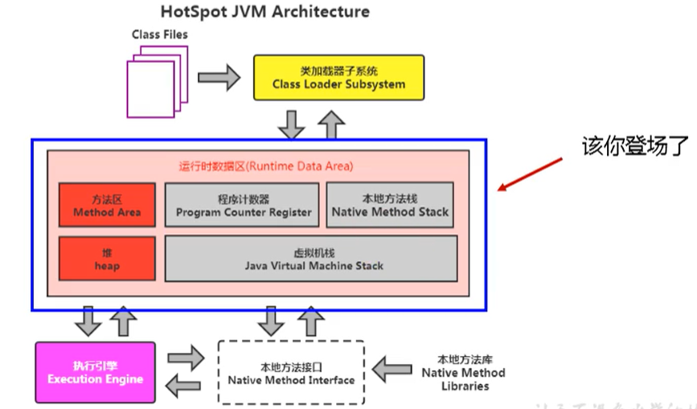

JVM-3_运行时数据区概述及线程
First Post:
Last Update:
Last Update:
运行时数据区(Runtime Data Area)内部结构
运行时数据区的完整图
运行时数据区可简单分为：
- 程序计数器(Program Counter Register, 或PC寄存器)
- 虚拟机栈(Java Virtual Machine Stack)
- 本地方法栈(Native Method Stack)
- 堆(Heap)
- 方法区(Method Area)

Java虚拟机定义了若干种程序运行期间会使用到的运行时数据区，其中有一些会随着虚拟机启动而创建，随着虚拟机退出而销毁。另外一些则是与线程一一对应的，这些与线程对应的数据区域会随着线程开始和结束而创建和销毁。
- 每个线程：独立包括程序计数器、栈、本地栈。
- 线程间共享：堆、堆外内存（永久代或元空间、代码缓存）

线程
线程是一个程序里的运行单元。JVM允许一个应用有多个线程并行的执行。
在Hotspot JVM里，每个线程都与操作系统的本地线程直接映射。
- 当一个Java线程准备好执行以后，此时一个操作系统的本地线程也同时创建。Java线程执行终止后，本地线程也会回收。
操作系统负责所有线程的安排调度到任何一个可用的CPU上。一旦本地线程初始化成功，它就会调用Java线程中的run()方法。
JVM系统线程
如果你使用console或者是任何一个调试工具，都能看到在后台有许多线程在运行。这些后台线程不包括调用public static void main（String[]）的main线程以及所有这个main线程自己创建的线程。|
这些主要的后台系统线程在Hotspot JVM里主要是以下几个：
- 虚拟机线程：这种线程的操作是需要JVM达到安全点才会出现。这些操作必须在不同的线程中发生的原因是他们都需要JVM达到安全点，这样堆才不会变化。这种线程的执行类型包括”stop-the-world”的垃圾收集，线程栈收集，线程挂起以及偏向锁撤销。
- 周期任务线程：这种线程是时间周期事件的体现（比如中断），他们一般用于周期性操作的调度执行。
- GC线程：这种线程对在JVM里不同种类的垃圾收集行为提供了支持。
- 编译线程：这种线程在运行时会将字节码编译成到本地代码。
- 信号调度线程：这种线程接收信号并发送给JVM，在它内部通过调用适当的方法进行处理。